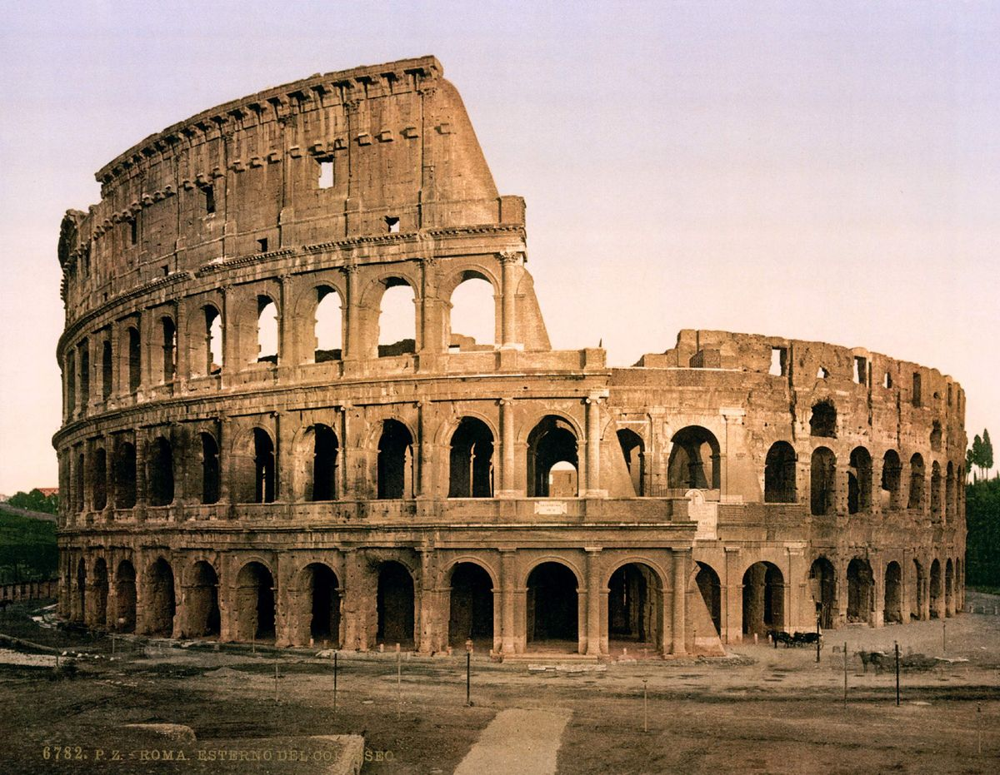
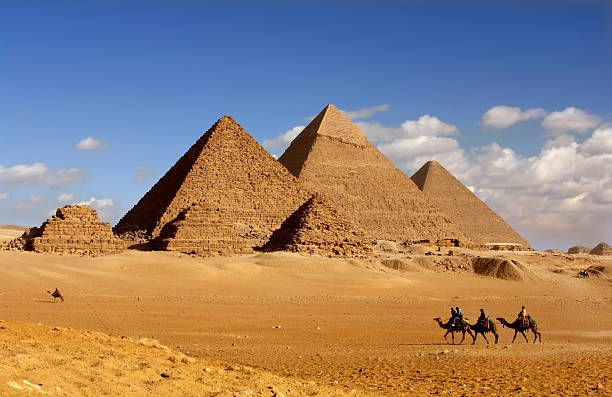

Ancient Roman architecture
Posted on 01.01.2017 by Someone
Ancient Roman architecture adopted the external language of classical
Greek architecture for the purposes of the ancient Romans, but grew
different from Greek buildings as it became a new architectural style.
0 COMMENTS
VIEW POST
Ancient Greek architecture
Posted on 01.01.2017 by Someone

The architecture of ancient Greece produced by the Greek-speaking
people whose culture flourished on the Greek mainland and the
Aegean islands.
0 COMMENTS
VIEW POST
Ancient Indian Architecture
Posted on 01.01.2017 by Someone

The pyramids of ancient Egypt were built as royal tombs for pharaohs
more than four thousand years ago. The Great Pyramid of Giza, raised
for Pharaoh Khufu, was the tallest man-made structure in the world
for thousands of years.
0 COMMENTS
VIEW POST